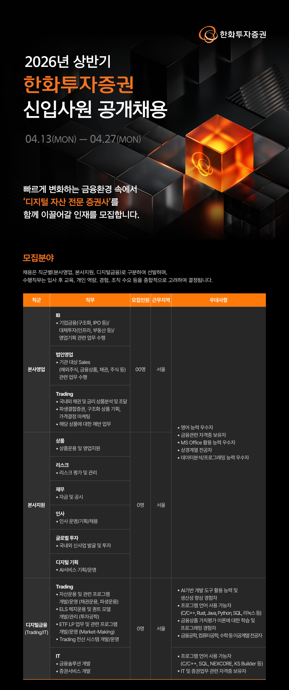
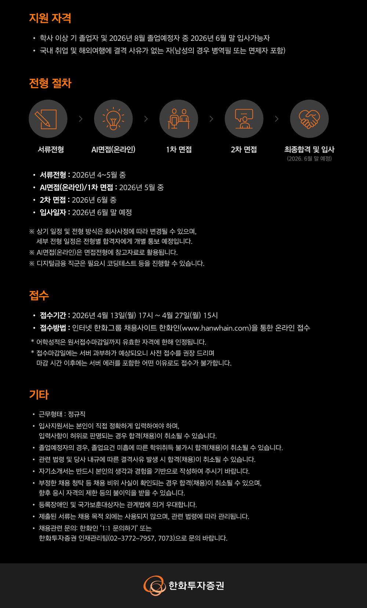
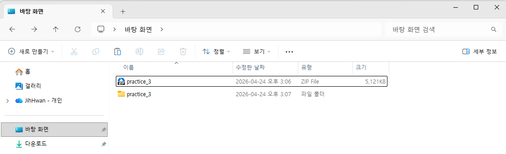
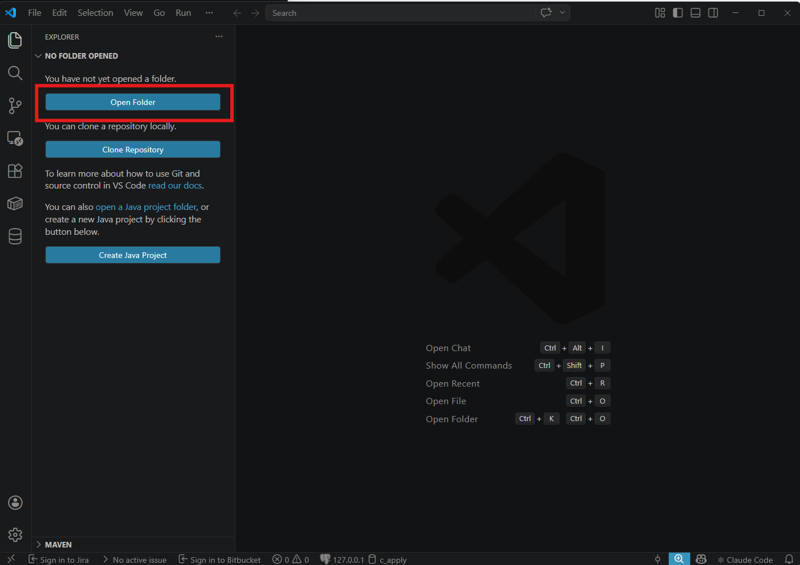
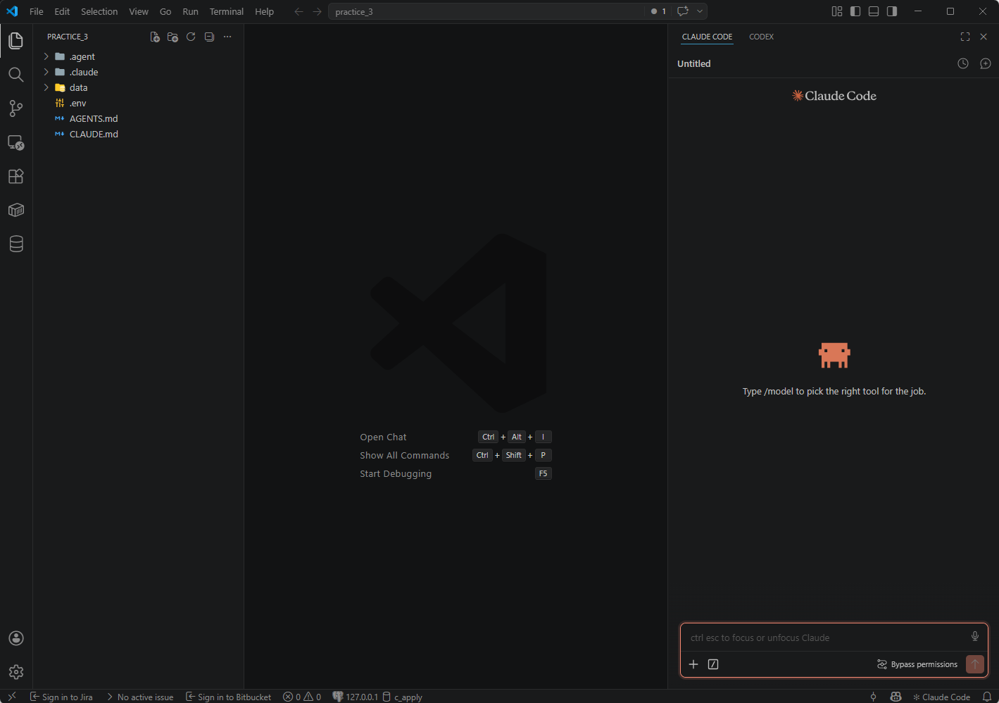

🌐 실습 교육 3 | 이미지 공고 → 캐치 폼 자동 변환 웹앱 만들기¶
비개발자가 코딩 에이전트와 대화하며, 이미지 형태의 외부 채용공고를 캐치 공고 등록 폼 양식의 Excel + HTML로 변환하는 작은 웹앱을 직접 만들어보는 실습 가이드입니다.
이번 실습은 무엇을 만드나요?¶
이미지에 담긴 내용을 읽어서 정해진 양식에 맞게 정리해야 하는 일은 사무실 곳곳에 흔히 있습니다. 이번 실습에서는 이런 종류의 작업을 사람이 매번 손으로 옮겨 적는 대신, 작은 웹앱으로 풀어내는 흐름을 한 번 통째로 만들어봅니다.
소재는 외부에서 받은 이미지 형태의 채용공고를 자사 채용 사이트의 등록 폼 양식에 맞춰 변환하는 작업입니다. 이미지를 화면에 올리면 우측에 추출 결과가 Excel 표 + HTML 미리보기로 뜨고, 사람이 바로 검수·편집·다운로드할 수 있는 형태입니다.
다루는 자료의 특성¶
단순해 보이지만 자료를 직접 들여다보면 결이 다른 어려움이 한꺼번에 등장합니다. 다음 네 가지를 모두 풀어내야 비로소 쓸 만한 결과물이 됩니다.
- 입력이 세로로 긴 이미지 (메인 샘플은 4000px) — 한 번에 모델에 못 넣으니 적당히 잘라 보내고 다시 이어 붙여야 합니다
- 한 이미지에 여러 사업부문·포지션이 섞여 있음 (예: 공채. 메인 샘플은 직군 3 × 직무 11 = 11개 모집부문) — 그 갯수가 공고마다 달라, 미리 정해두지 않고 들어오는 자료에 맞춰 동적으로 분리·반복 처리해야 합니다
- 출력 폼에 정해진 선택지 카탈로그(학력·고용형태·전형유형·복리후생 등) — 자유 텍스트가 아니라 정해진 분류 안으로 떨어뜨려야 합니다
- 결과는 사람이 바로 눈으로 확인하고 손볼 수 있어야 의미가 있습니다 — 그래서 단순 스크립트가 아니라 작은 웹 화면까지 함께 만듭니다
입력 자료 — 이미지 채용공고 4건¶
메인 샘플은 한화 공채(긴 이미지 + 멀티 포지션)이고, 2번 페이지에서 짧은 이미지·중간 길이·매우 긴 이미지 3건도 같은 모듈로 돌려봅니다. 모듈이 특정 형태에 맞춰지지 않고 범용적으로 동작함을 확인하는 흐름입니다.
| 파일 | 크기 | 특징 |
|---|---|---|
data/hanwha_2026.jpg |
1000 × 4038 | 메인 샘플. 긴 이미지, 직군 3 × 직무 11 = 모집부문 11 |
data/hanmi_2026.jpg |
900 × 8667 | 매우 긴 이미지, 여러 조각으로 분할 |
data/dongaoshuca_2026.png |
973 × 3531 | 중간 길이 |
data/codeit_2026.png |
785 × 1425 | 짧은 이미지, 단일 포지션 |
메인 샘플 한화 공고는 세로로 너무 길어서 한 장에 담기 어려워, 상·하 반으로 잘라 좌우로 나란히 보여줍니다.


목표 결과물 — 좌(원본) ↔ 우(결과 탭) 비교 화면¶
| 좌측 (사이드바) | 메인 좌 | 메인 우 |
|---|---|---|
+ 이미지 공고 추가 |
업로드한 원본 이미지 | [Excel 형식] [HTML 형식] [원본 JSON] 탭 |
| 업로드 항목 리스트 | (스크롤·확대 가능) | 사업부문·직무별 카드, 편집 가능 표, Excel 다운로드 |
워크플로 시뮬레이션:
외부 공고 이미지 받음 → 사이드바에 추가 → 우측 결과 검수 → Excel 다운로드 → 캐치 폼에 옮김
중간 결과물 예시 — 이미지 자르기·파싱까지 완료된 상태


최종 웹앱 동작 모습 — 3번 페이지까지 완료된 상태


기술 스택¶
| 계층 | 도구 |
|---|---|
| LLM | Gemini 3.1 Flash Lite Preview (google-genai SDK, 모델 ID gemini-3.1-flash-lite-preview) |
| 이미지 처리 | Pillow + numpy |
| 백엔드 | FastAPI + Python 3.11+ + uv |
| 프론트 | Next.js 15 App Router + TypeScript + Tailwind |
| 출력 | openpyxl (Excel), Jinja2 (HTML 미리보기) |
실습 전 준비¶
준비물
- AI 코딩 에이전트 (Claude Code, Codex, Antigravity 중 택1) 설치
- Node.js 20+, Python 3.11+,
uv또는pip,pnpm또는npm - 공용 Gemini API Key
practice_3.zip압축 해제
practice_3/
├── AGENTS.md ← 기술 스택·SDK 가이드·결과 폴더 위치 박제
├── .env.example ← GEMINI_API_KEY 위치
└── data/ ← 레퍼런스 자료
├── hanwha_2026.jpg ← 메인 샘플 공고 (긴 이미지, 멀티 포지션)
├── codeit_2026.png ← 짧은 이미지 샘플 (2번에서 추가 시도)
├── dongaoshuca_2026.png ← 중간 길이 샘플 (2번에서 추가 시도)
├── hanmi_2026.jpg ← 매우 긴 이미지 샘플 (2번에서 추가 시도)
└── sample_catch_html.html ← 캐치 사이트 자동 생성 HTML 예시 (few-shot)
🗂️ 실습 파일 준비하기¶
AI 코딩 에이전트가 이 폴더 안의 자료(공고 이미지·샘플 HTML)를 볼 수 있도록 practice_3 폴더를 VSCode로 열어둬야 합니다.
1️⃣ practice_3.zip 을 바탕화면에서 압축 해제¶
전달받은 practice_3.zip 을 바탕화면에 두고 더블클릭해서 풀어줍니다. zip 파일 옆에 practice_3 폴더가 새로 생기면 성공입니다.

2️⃣ VSCode를 열고 Open Folder 클릭¶
VSCode 시작 화면에서 Open Folder 버튼을 누릅니다 (단축키 Ctrl + K → Ctrl + O).

3️⃣ 방금 압축 해제한 practice_3 폴더 선택¶
폴더 선택창에서 바탕화면 → practice_3 을 고르고 오른쪽 아래 Select folder 를 누릅니다.

주의 — practice_3 폴더 자체를 선택
실수로 data 폴더나 바탕화면을 선택하지 않도록 주의하세요. 반드시 AGENTS.md, .env.example, data 등이 안에 보이는 practice_3 폴더를 선택해야 합니다.
4️⃣ 프로젝트가 열리면 AI 코딩 에이전트 패널 확인¶
왼쪽 탐색기에 data 폴더와 AGENTS.md 가 보이고 오른쪽에 코딩 에이전트 패널이 있으면 준비 완료입니다.

🚦 자동 허가 모드 설정
에이전트가 매번 "이 파일 수정해도 될까요?" 물으면 실습 흐름이 끊깁니다. 시작 전에 자동 허가 모드 로 바꿔두세요.
👉 자동 허가 모드 설정 가이드 열기 (Claude Code / Antigravity / Codex)
사용량 절약을 위한 모델 선택
홈 가이드에 정리된 IDE별 모델 선택 권장사항을 그대로 따르세요. 이번 실습은 백엔드·프론트 코드를 둘 다 만들기 때문에 사용량 소진이 빠를 수 있습니다.
지금 뭘 하는 건가요? (한눈에 보기)¶
flowchart LR
IN["📥 외부 이미지 공고"]
subgraph WORK["🤖 이번 실습 (3단)"]
S1["1.<br/>결과를 담을<br/>빈 양식 만들기"]
S2["2.<br/>이미지 공고에서<br/>정보 뽑아 양식 채우기"]
S3["3.<br/>웹 화면 붙이고<br/>직접 써보기"]
S1 --> S2 --> S3
end
OUT["📦 동작하는 웹앱<br/>+ Excel/HTML 결과물"]
IN --> WORK --> OUT페이지별 로드맵¶
| 페이지 | 무엇을 하나 | 소요 | 프롬프트 수 |
|---|---|---|---|
| 1 | 캐치 폼 카탈로그 + 결과를 담을 빈 Excel·HTML 양식 만들기 (가짜 데이터로 한 번 채워 확인) | 20분 | 2개 |
| 2 | 긴 이미지를 알맞게 잘라 AI에 보내고, 여러 직무가 섞인 공고를 자동 분리해 양식에 채우기 | 40분 | 2개 |
| 3 | 지금까지 만든 걸 웹 화면으로 감싸고 브라우저에서 직접 써보기 | 30분 | 2개 |
총 예상 시간: 90분
왜 Skill 포장이 아닌가요?
실습 1·2는 마지막에 Skill로 포장해서 재사용 가능한 매뉴얼을 남겼습니다. 실습 3은 한 단계 더 나아가, 실제로 동작하는 웹앱을 결과물로 남깁니다. 매일 들여다볼 수 있는 화면이 곧 자동화의 가장 실전적인 형태이기 때문입니다.
다음 → 1. 결과를 담을 빈 양식 만들기